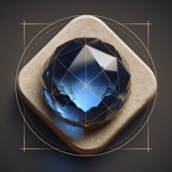
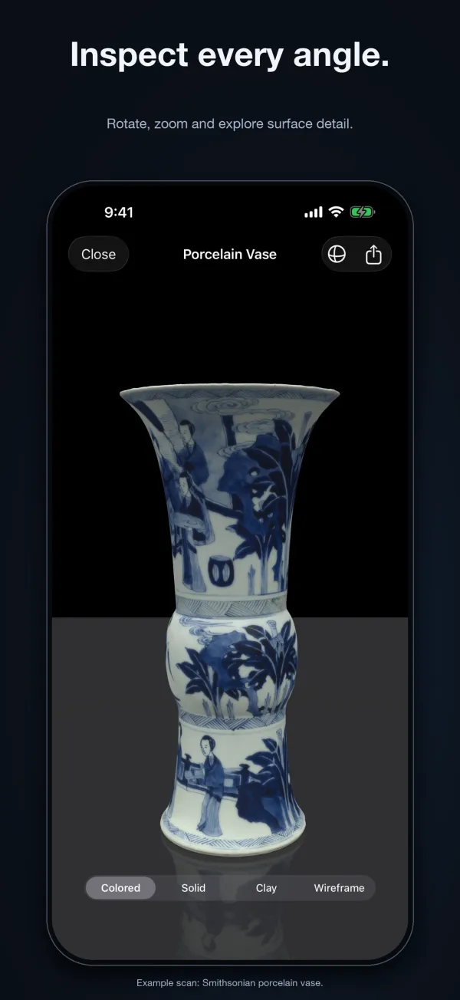
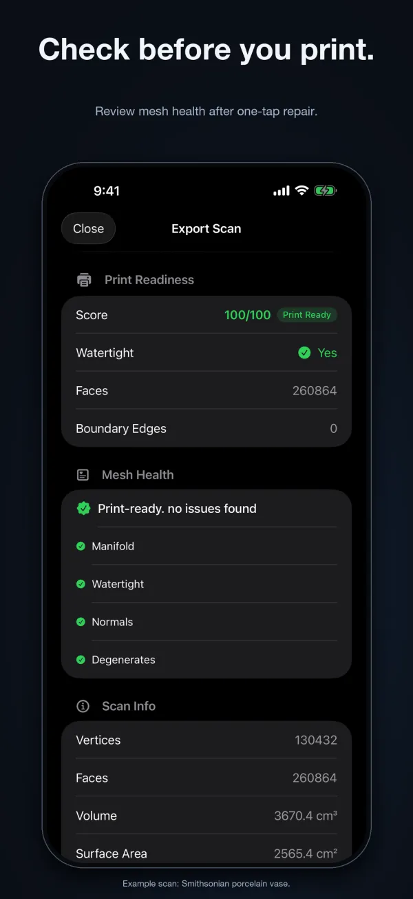
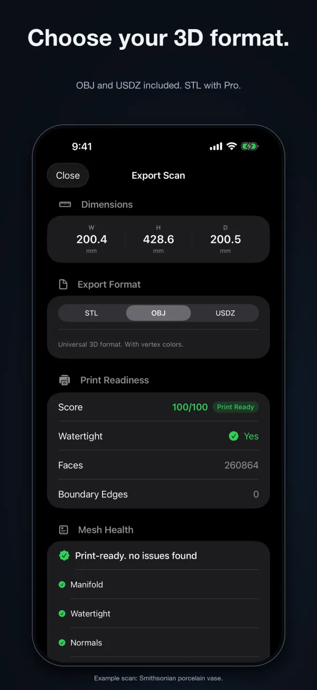
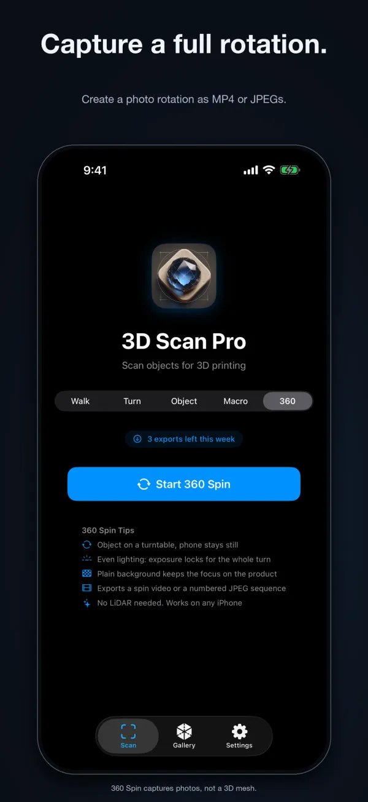

For iPhone and iPad. Requires iOS 26.0 or later. LiDAR scan modes require a LiDAR-equipped device.
3D Scan Pro
Scan real-world objects and repair 3D meshes for printing on iPhone.
3D Scan Pro captures real objects using LiDAR and camera photogrammetry, removes floor and table geometry, and repairs meshes for 3D printing. It is built for 3D printing hobbyists, makers, designers, and collectors working on iPhone and iPad.
Free to download. Optional one-time Pro Unlock, $9.99.

What it does
Five scan modes
Walk Around uses LiDAR for furniture and medium objects, and Turntable suits figurines and small products. Object Capture builds textured photogrammetry models, Macro uses the ultra-wide camera for coins, jewelry and minerals, and 360 Spin captures a photo rotation of an object on a turntable.
Mesh diagnostics and repair
Check scans for non-manifold edges, open holes, flipped normals, and degenerate triangles before exporting. The Fix for 3D Printing tool repairs common mesh issues and uses voxel remeshing to rebuild models as closed, watertight surfaces.
Automatic floor removal
The scanning pipeline detects and filters out floor and table planes during processing so your exported model contains the object rather than the surrounding surface.
Print measurements and formats
View object dimensions in millimeters, volume, surface area, and a print readiness score on the export screen. Export models as STL for 3D printing slicers, OBJ with vertex colors for 3D modeling software, or USDZ for viewing in augmented reality.
360 Spin product rotations
Put an object on a turntable, keep the phone still, and 360 Spin records a full rotation with exposure locked for the whole turn. It exports a looping MP4 video or a numbered JPEG sequence, and it does not need LiDAR.
How it works
Pick a scan mode
Choose Walk Around, Turntable, Object Capture, Macro or 360 Spin based on your object and your device's camera hardware.
Capture the object
Follow the on-screen coverage guidance while moving around the object or rotating it on a turntable.
Check and repair
Review the 3D preview and mesh health report, then tap Fix for 3D Printing if the mesh has holes or non-manifold edges.
Export your 3D file
Export the finished mesh in STL, OBJ, or USDZ format to send to your slicer or 3D modeling tool.
Screenshots



Free and paid
Free to download. Optional one-time Pro Unlock, $9.99.
Free
- All scan modes (Walk Around, Turntable, Object Capture, Macro and 360 Spin)
- Up to 3 exports per week
- Interactive 3D preview and saved scan gallery
- OBJ and USDZ file export
Pro Unlock, $9.99
- One-time $9.99 Pro Unlock with no subscription
- Unlimited weekly exports
- STL export for 3D printing slicers
- Mesh health diagnostics and Fix for 3D Printing repair tools
- Volume, surface area, and print readiness calculations
Get 3D Scan Pro
For iPhone and iPad. Requires iOS 26.0 or later. LiDAR scan modes require a LiDAR-equipped device. Questions are answered on the Help page, and the privacy policy explains what stays on your device.